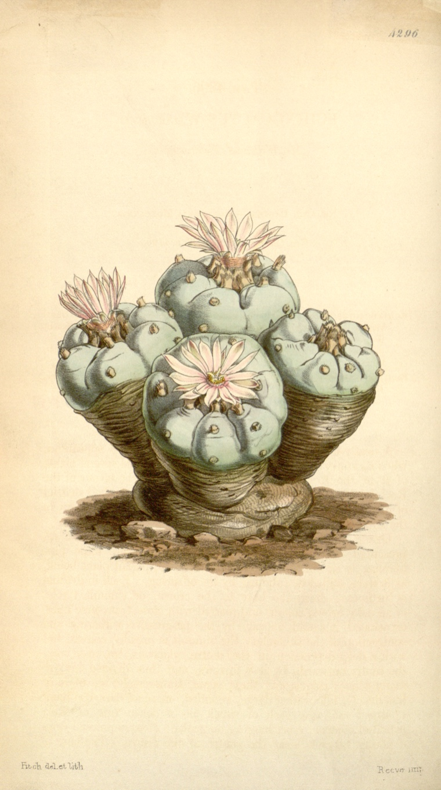

An afternoon people remembered
Fourteen months after a Johns Hopkins experiment, 58 percent of its 36 volunteers still ranked a psilocybin session among the five most personally meaningful experiences of their lives.
These were healthy adults who already practiced some form of religion or spirituality. They had been screened, prepared, and accompanied through monitored sessions. Their ratings were reports about meaning, rather than evidence that a drug had cured them or revealed an external spiritual reality. Still, a brief experience had acquired a place beside events that usually take years of living to accumulate. The follow-up was published in 2008.
Personal meaning, knowledge of the world, and medical benefit need different kinds of evidence. A questionnaire can record what a session meant to someone. Testing a treatment requires a comparison with patients receiving something else.
Psilocybin, mescaline, LSD, and DMT belong to the drugs usually called classic psychedelics. Their effects involve serotonin receptors, particularly 5-HT2A. That shared pharmacology gives researchers something to compare. It does not make the ceremonies, beliefs, or risks surrounding them interchangeable.
Who holds the ceremony
Peyote
Peyote recovered from the Shumla caves in Texas was radiocarbon-dated to roughly 5,700 years ago. A chemical analysis identified mescaline in the surviving material. The archaeological study supports ancient use of a psychoactive cactus. It cannot establish what those people experienced or whether their practice resembled a present-day ceremony.
For contemporary Native American Church communities, peyote is a sacrament within inherited religious obligations. The Indigenous Peyote Conservation Initiative, led by Native American Church representatives, asks drug reformers to leave peyote out of general decriminalization campaigns. It seeks to protect habitat and access to the medicine for Indigenous ceremonies. A visitor's interest in consciousness does not settle who should control that resource.
Ayahuasca
A common ayahuasca preparation combines the vine Banisteriopsis caapi with leaves containing DMT, often Psychotria viridis. Alkaloids in the vine inhibit monoamine oxidase, an enzyme that would otherwise break down swallowed DMT. That interaction helps make it orally active. Human pharmacology studies support the chemistry. Recipes and ceremonial purposes vary; the brew is not one universal two-plant formula.
The União do Vegetal describes itself as a Christian Spiritist religion and calls its sacrament Hoasca. An Indigenous healing practice, a Brazilian church service, and a tourist retreat may use related preparations while assigning different roles to the person leading them and different meanings to the experience.
María Sabina's mushrooms
In 1957, R. Gordon Wasson's Life article brought the mushroom ceremonies of the Mazatec healer María Sabina to a large American readership. In the oral autobiography recorded by Álvaro Estrada and translated into English in 1981, she described mushrooms as her “saint children,” used in a night ceremony to diagnose and heal illness. Her account includes chants, obligations, and Catholic religious language.
Sabina objected to visitors who took mushrooms whenever they wanted, outside the direction of a healer and without an illness to treat. She said their arrival had diminished the mushrooms' power.
Eleusis, an unresolved case
The Homeric Hymn to Demeter describes a drink of water, barley, and mint. In The Road to Eleusis (1978), Albert Hofmann and his coauthors proposed that ergot growing on grain could have supplied psychoactive alkaloids. They did not recover the initiates' recipe or establish that ergot was used. The psychedelic explanation remains unconfirmed.
These accounts give us different standards for a successful ceremony: healing an illness, fulfilling religious obligations, or undergoing initiation. A modern questionnaire about unity cannot tell us whether those purposes were fulfilled.
Flowers, then an explanation
In May 1953, Aldous Huxley took mescaline and found himself absorbed by a vase of flowers. In The Doors of Perception, he called what he saw “the miracle, moment by moment, of naked existence.” The flowers were ordinary. What had changed was their significance to him.
Drawing on C. D. Broad's discussion of Henri Bergson, Huxley proposed that the brain filters an immense field of awareness, “Mind at Large,” into a portion useful for survival. Mescaline, he thought, loosened that filter. The book also acknowledged a difficulty: absorbed contemplation could leave a person poorly equipped to act.
- Mind at Large. Huxley proposes a wider field of awareness.
- The filter. In his model, the brain and senses limit ordinary awareness.
- Mescaline. He proposes that it loosens this filter.
A picture of the hypothesis, not an established mechanism or a map of the default mode network.
An altered state can feel more real than ordinary life, but that feeling does not choose between explanations. Changes in the brain's construction of experience could also produce vividness and certainty. Huxley's account would require evidence that the additional awareness supplies knowledge of a reality beyond that activity.
A 2024 brain-imaging study repeatedly scanned seven healthy adults given psilocybin or methylphenidate. Psilocybin disrupted the usual synchronization of brain activity across several networks, with particularly strong effects in the default mode network. The disruption tracked the intensity of the experience; some changes in connectivity persisted beyond the session. This was a small study of brain activity, not a test of access to a universal mind.
The default mode network participates in autobiographical thought and other processes. Altered coordination across networks can help explain changes in experience. Identifying one network as the seat of the self or Huxley's valve goes beyond the imaging evidence.
William James left a useful boundary in The Varieties of Religious Experience: “Mystical states indeed wield no authority due simply to their being mystical states.” A private conviction may change a life. Other people still need reasons to accept its claims.
What the comparison shows
In the clinical trials below, screened participants received preparation, supervision, and psychological support. The results apply first to that treatment package and those patients.
Cancer-related distress
A 2016 Johns Hopkins trial randomized 56 people with life-threatening cancer and clinically significant depression or anxiety; 51 received at least one psilocybin session. Participants received high-dose and very-low-dose psilocybin in different orders. Five weeks after the first session, depression scores had fallen by at least half in 23 of 25 assessed participants given the high dose, compared with 8 of 25 given the low dose: 92 percent versus 32 percent.
At six months, 78 percent of those assessed met that depression-response threshold. By then, both groups had received the high dose. The follow-up supports possible lasting benefit but lacks a continuing comparison group without high-dose treatment. Some participants also began other medication during follow-up. A separate NYU trial of 29 patients, using niacin as its control, also found substantial short-term reductions in cancer-related distress. Its later follow-up had the same crossover limitation.
Depression outside cancer care
In a 2021 trial of 59 adults with major depression, psilocybin was compared with escitalopram. Both groups received psychological support. At six weeks, the groups did not differ significantly on the prespecified primary depression measure. Several secondary outcomes favored psilocybin, but those comparisons were not adjusted for multiple testing. The trial did not establish psilocybin's superiority. Its size and uncertainty also prevent us from concluding that the treatments are equivalent.
In a 2022 trial of 233 adults with treatment-resistant depression, the highest psilocybin dose outperformed the lowest on the primary depression measure at three weeks. Remission meant a score of ten or less on the clinician-rated depression scale. It occurred in 23 of 79 highest-dose participants and 6 of 79 lowest-dose participants: 29 percent versus 8 percent. Those secondary results were not statistically conclusive under the trial's testing procedure.
The same trial reported suicidal behavior in three of the 79 highest-dose participants during the later follow-up. All three had a previous history of suicidal behavior or self-injury. Causation remains uncertain. The events make follow-up care essential to evaluating the treatment.
In July 2026, Compass Pathways reported positive results from its Phase 3 program and said a rolling FDA application was underway. These are sponsor announcements. The full analyses and regulatory review matter before extending their claims to routine care.
Does a mystical experience cause the benefit?
The Mystical Experience Questionnaire asks about unity, sacredness, a sense of knowing, changes in time and space, and difficulty putting the experience into words. It gives researchers a consistent way to score reports. It cannot determine whether an experience was sacred in a particular tradition or whether the knowledge felt during it was true.
In the cancer trials, higher mystical-experience scores were associated with better later outcomes. The trials did not randomly assign people to have equally intense experiences with and without a mystical interpretation. Dose, expectation, emotional engagement, and other features of the session may influence both the score and the outcome. The association does not yet establish that a mystical state is the ingredient doing the healing.
A difficult drug to disguise
In a blinded trial, participants and assessors are meant to remain uncertain about treatment assignment. A pronounced psychedelic effect makes that difficult. If a patient recognizes the active drug, expectations can influence their report. If an assessor infers the assignment, ratings can be affected too. This can bias results, although we cannot assume how much of an observed benefit it explains.
The FDA's July 2026 guidance recommends measures such as blinded central raters and attention to expectancy, alongside suitable controls. Comparing drug-plus-support with control-plus-support estimates the drug's added benefit within that setting. It does not establish what an unsupervised dose will do.
Microdosing
A 2021 self-blinding experiment had 191 participants complete four weeks of taking small doses or placebo capsules they prepared themselves. Psychological outcomes improved in both groups, without significant differences on the main longer-term measures. Participants' beliefs about which capsule they had taken helped explain some apparent effects.
Self-selected participants and unverified doses limit the study's conclusions. It challenges broad claims about microdosing without settling every potential use. As the NIH summarizes the evidence, microdosing has not been established as safe or effective.
MDMA and PTSD
MDMA differs pharmacologically from classic psychedelics. A 2023 MDMA trial randomized 104 adults with moderate or severe PTSD to MDMA or placebo, with the same therapy program. At the final assessment, about 18 weeks after treatment began, 37 of 52 assessed MDMA participants no longer met PTSD diagnostic criteria, compared with 20 of 42 placebo participants: 71 percent versus 48 percent. More placebo participants were missing at follow-up. The therapy-plus-placebo group also improved substantially. Losing the diagnosis at that assessment did not demonstrate permanent cure.
On August 8, 2024, the FDA issued a Complete Response Letter declining to approve the application in its current form. It identified problems including functional unblinding, inadequate collection of some adverse events, and insufficient evidence of durability. It recommended another trial and an independent audit of earlier trial conduct and data.
The decision left MDMA's possible usefulness open while requiring more reliable evidence before approval.
What a careful setting cannot remove
Preparation, a calm environment, and trusted supervision can reduce distress and help prevent accidents. They cannot guarantee a safe experience. The drug, dose, medical history, medications, and events after the session also matter. Research safety guidelines call for psychiatric screening, physical safeguards, and trained monitors. Many trials exclude people with psychotic disorders or bipolar disorder, sometimes also those with a relevant family history. Their results cannot simply be extended to everyone excluded.
Classic psychedelics have a different toxicity profile from MDMA and other drugs sometimes grouped with them. Deaths directly from acute overdose are less common with drugs such as LSD, psilocybin, and mescaline. Dangerous outcomes remain possible. The NIH lists increases in blood pressure and heart rate, nausea, headache, panic, and impaired judgment among possible harms. Accidents during disorientation can be serious even when the drug has not directly injured an organ.
Persistent visual disturbances, including hallucinogen persisting perception disorder, are another reported harm. Severe or prolonged psychiatric reactions are a concern, especially in vulnerable people. We do not have a reliable population-wide rate for every drug, exposure pattern, and patient group. Small, screened trials cannot settle the frequency of rare harms.
Medication interactions need individual review. Ayahuasca's monoamine-oxidase inhibition creates a concern about serotonin toxicity when combined with serotonergic medication. A clinical report and pharmacological analysis warned about combinations with serotonin-reuptake inhibitors. Reports of seizures with lithium and psychedelics are also concerning, although the evidence from online reports cannot estimate an individual's risk.
Permissions with boundaries
As of October 3, 2026, psilocybin, LSD, mescaline, DMT, and MDMA remain Schedule I controlled substances under federal law. None is an FDA-approved medicine; the 2026 approval list contains none of them. The FDA is developing guidance and reviewing potential treatments; research authorization and expedited review are not approval. Schedule I restricts research but does not prohibit it: authorized clinical trials can proceed.
Oregon permits psilocybin services for adults 21 and older at licensed centers with licensed facilitators. A prescription or diagnosis is not required. Colorado has its own regulated natural-medicine framework and separate provisions governing personal use. Neither changes federal controlled-substance law.
Religious protection is specific
In Employment Division v. Smith (1990), Oregon denied unemployment benefits to two people dismissed by a private employer for sacramental peyote use. The Supreme Court upheld the denial under its rule for neutral, generally applicable laws.
Congress later enacted a 1994 protection for traditional ceremonial peyote use by members of federally recognized Indian tribes. The statute protects specified religious use, possession, and transportation; it also allows regulation of cultivation and harvesting. It is not a general exemption for anyone who joins a church or calls an experience spiritual.
In Gonzales v. O Centro (2006), the Supreme Court upheld a preliminary injunction allowing a particular UDV congregation to use its sacrament under specified conditions. Applying the Religious Freedom Restoration Act, the Court required the government to justify its prohibition as applied to that community. The ruling did not legalize ayahuasca for everyone.
How long the change lasts
In the treatment-resistant-depression trial, 16 of 79 highest-dose participants maintained a reduction of at least half in their depression scores from week three through every assessment to week twelve, compared with 8 of 79 at the lowest dose. That difference was not statistically conclusive.
Texts, trials, and rules
Read the 34 sources
- Griffiths et al. (2008). Fourteen-month follow-up of 36 healthy volunteers.
- El-Seedi et al. (2005). Radiocarbon dating and alkaloid analysis of prehistoric peyote.
- Indigenous Peyote Conservation Initiative. Indigenous leadership and peyote conservation.
- Riba et al. (2003). Human pharmacology of ayahuasca.
- União do Vegetal. The community's account of its religion.
- María Sabina: Her Life and Chants (1981). Oral autobiography recorded by Álvaro Estrada; English translation and commentary by Henry Munn. Chapters 18 and 19.
- Homeric Hymn to Demeter. The barley, water, and mint drink, lines 206 to 211.
- Wasson, Hofmann, and Ruck, The Road to Eleusis (1978). The proposed ergot explanation.
- Huxley, The Doors of Perception (1954). Flowers, pages 3 and 4; the hypothesis, pages 6 and 7; contemplation and action, page 12.
- Siegel et al. (2024). Repeated brain imaging of seven participants.
- James, The Varieties of Religious Experience (1902). Lectures XVI and XVII on mysticism.
- Griffiths et al. (2016). Cancer-related depression and anxiety; Table 6 gives response definitions and follow-up denominators.
- Ross et al. (2016). Cancer-related distress in a 29-patient crossover trial.
- Carhart-Harris et al. (2021). Psilocybin compared with escitalopram.
- Goodwin et al. (2022). Dose comparison in treatment-resistant depression.
- Compass Pathways (July 7, 2026). Sponsor report on Phase 3 results and its application.
- Barrett, Johnson, and Griffiths (2015). Validation of the Mystical Experience Questionnaire.
- FDA (July 2026). Final guidance on clinical investigations of psychedelic drugs.
- Szigeti et al. (2021). The self-blinding microdosing study.
- Mitchell et al. (2023). The 104-participant MDMA and PTSD trial.
- FDA (August 8, 2024). Complete Response Letter for the MDMA application.
- Johnson, Richards, and Griffiths (2008). Human hallucinogen research safety guidelines.
- NIH, Psychedelic and Dissociative Drugs. Health effects, risks, and research limits.
- DEA, Hallucinogens (2024). Overdose and other sources of harm.
- Callaway and Grob (1998); Nayak et al. (2021). Medication interaction concerns and their evidence limits.
- 21 CFR § 1308.11. Federal Schedule I substances.
- FDA, Psychedelic Drugs; 2026 novel drug approvals. Current activity and approvals, checked October 3, 2026.
- Oregon Health Authority; Colorado natural-medicine regulators. State programs and their boundaries.
- Employment Division v. Smith (1990). The unemployment-benefits case.
- 42 USC § 1996a. The statutory peyote protection and its scope.
- Gonzales v. O Centro (2006). RFRA and the UDV injunction.